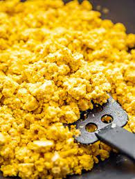

Scrambled Tofu

Nutritious and delicious. This vegan breakfast staple is great on toast, in
breakfast burritos, or on it's own. You won't miss the eggs.
Ingredients
- 16 ounces of extra firm tofu
- 1/4 cup of nutritional yeast
- 1 tbsp hemp hearts
- 1 tbsp himalayan black salt
- 1/2 tsp turmeric
- Black pepper, to taste
Method
- Heat a non-stick or cast iron skillet over medium high heat.
Crumble tofu into pan.
- Stir constantly for 2 minutes, until the water begins to cook off.
Add nutritional yeast, hemp hearts, turmeric, and black salt.
- Continue stirring until the tofu has completely heated through, another 2-3 minutes.